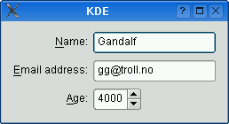
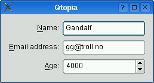

QFormLayout¶
Synopsis¶
Functions¶
- def
addRow(label, field) - def
addRow(label, field) - def
addRow(labelText, field) - def
addRow(labelText, field) - def
addRow(layout) - def
addRow(widget) - def
fieldGrowthPolicy() - def
formAlignment() - def
getItemPosition(index) - def
getLayoutPosition(layout) - def
getWidgetPosition(widget) - def
horizontalSpacing() - def
insertRow(row, label, field) - def
insertRow(row, label, field) - def
insertRow(row, labelText, field) - def
insertRow(row, labelText, field) - def
insertRow(row, layout) - def
insertRow(row, widget) - def
itemAt(row, role) - def
labelAlignment() - def
labelForField(field) - def
labelForField(field) - def
removeRow(layout) - def
removeRow(row) - def
removeRow(widget) - def
rowCount() - def
rowWrapPolicy() - def
setFieldGrowthPolicy(policy) - def
setFormAlignment(alignment) - def
setHorizontalSpacing(spacing) - def
setItem(row, role, item) - def
setLabelAlignment(alignment) - def
setLayout(row, role, layout) - def
setRowWrapPolicy(policy) - def
setVerticalSpacing(spacing) - def
setWidget(row, role, widget) - def
verticalSpacing()
Detailed Description¶
The
PySide2.QtWidgets.QFormLayoutclass manages forms of input widgets and their associated labels.
PySide2.QtWidgets.QFormLayoutis a convenience layout class that lays out its children in a two-column form. The left column consists of labels and the right column consists of “field” widgets (line editors, spin boxes, etc.).Traditionally, such two-column form layouts were achieved using
PySide2.QtWidgets.QGridLayout.PySide2.QtWidgets.QFormLayoutis a higher-level alternative that provides the following advantages:
Adherence to the different platform’s look and feel guidelines.
For example, the macOS Aqua and KDE guidelines specify that the labels should be right-aligned, whereas Windows and GNOME applications normally use left-alignment.
Support for wrapping long rows.
For devices with small displays,
PySide2.QtWidgets.QFormLayoutcan be set towrap long rows, or even towrap all rows.Convenient API for creating label–field pairs.
The
PySide2.QtWidgets.QFormLayout.addRow()overload that takes aPySide2.QtCore.QStringand aPySide2.QtWidgets.QWidget* creates aPySide2.QtWidgets.QLabelbehind the scenes and automatically set up its buddy. We can then write code like this:formLayout = QFormLayout() formLayout.addRow(self.tr("&Name:"), nameLineEdit) formLayout.addRow(self.tr("&Email:"), emailLineEdit) formLayout.addRow(self.tr("&Age:"), ageSpinBox) setLayout(formLayout)Compare this with the following code, written using
PySide2.QtWidgets.QGridLayout:nameLabel = QLabel(self.tr("&Name:")) nameLabel.setBuddy(nameLineEdit) emailLabel = QLabel(self.tr("&Name:")) emailLabel.setBuddy(emailLineEdit) ageLabel = QLabel(self.tr("&Name:")) ageLabel.setBuddy(ageSpinBox) gridLayout = QGridLayout() gridLayout.addWidget(nameLabel, 0, 0) gridLayout.addWidget(nameLineEdit, 0, 1) gridLayout.addWidget(emailLabel, 1, 0) gridLayout.addWidget(emailLineEdit, 1, 1) gridLayout.addWidget(ageLabel, 2, 0) gridLayout.addWidget(ageSpinBox, 2, 1) setLayout(gridLayout)The table below shows the default appearance in different styles.
PySide2.QtWidgets.QCommonStylederived styles (except QPlastiqueStyle)QMacStyle QPlastiqueStyle Qt Extended styles   Traditional style used for Windows, GNOME, and earlier versions of KDE. Labels are left aligned, and expanding fields grow to fill the available space. (This normally corresponds to what we would get using a two-column PySide2.QtWidgets.QGridLayout.)Style based on the macOS Aqua guidelines. Labels are right-aligned, the fields don’t grow beyond their size hint, and the form is horizontally centered. Recommended style for KDE applications. Similar to MacStyle, except that the form is left-aligned and all fields grow to fill the available space. Default style for Qt Extended styles. Labels are right-aligned, expanding fields grow to fill the available space, and row wrapping is enabled for long lines. The form styles can be also be overridden individually by calling
PySide2.QtWidgets.QFormLayout.setLabelAlignment(),PySide2.QtWidgets.QFormLayout.setFormAlignment(),PySide2.QtWidgets.QFormLayout.setFieldGrowthPolicy(), andPySide2.QtWidgets.QFormLayout.setRowWrapPolicy(). For example, to simulate the form layout appearance of QMacStyle on all platforms, but with left-aligned labels, you could write:formLayout.trowWrapPolicy(QFormLayout.DontWrapRows) formLayout.setFieldGrowthPolicy(QFormLayout.FieldsStayAtSizeHint) formLayout.setFormAlignment(Qt.AlignHCenter | Qt.AlignTop) formLayout.setLabelAlignment(Qt.AlignLeft)


-
class
PySide2.QtWidgets.QFormLayout([parent=nullptr])¶ Parameters: parent – PySide2.QtWidgets.QWidgetConstructs a new form layout with the given
parentwidget.See also
-
PySide2.QtWidgets.QFormLayout.FieldGrowthPolicy¶ This enum specifies the different policies that can be used to control the way in which the form’s fields grow.
Constant Description QFormLayout.FieldsStayAtSizeHint The fields never grow beyond their effective size hint. This is the default for QMacStyle.QFormLayout.ExpandingFieldsGrow Fields with an horizontal size policyofExpandingorMinimumExpandingwill grow to fill the available space. The other fields will not grow beyond their effective size hint. This is the default policy for Plastique.QFormLayout.AllNonFixedFieldsGrow All fields with a size policy that allows them to grow will grow to fill the available space. This is the default policy for most styles.
-
PySide2.QtWidgets.QFormLayout.RowWrapPolicy¶ This enum specifies the different policies that can be used to control the way in which the form’s rows wrap.
Constant Description QFormLayout.DontWrapRows Fields are always laid out next to their label. This is the default policy for all styles except Qt Extended styles. QFormLayout.WrapLongRows Labels are given enough horizontal space to fit the widest label, and the rest of the space is given to the fields. If the minimum size of a field pair is wider than the available space, the field is wrapped to the next line. This is the default policy for Qt Extended styles. QFormLayout.WrapAllRows Fields are always laid out below their label.
-
PySide2.QtWidgets.QFormLayout.ItemRole¶ This enum specifies the types of widgets (or other layout items) that may appear in a row.
Constant Description QFormLayout.LabelRole A label widget. QFormLayout.FieldRole A field widget. QFormLayout.SpanningRole A widget that spans label and field columns.
-
PySide2.QtWidgets.QFormLayout.addRow(widget)¶ Parameters: widget – PySide2.QtWidgets.QWidgetThis is an overloaded function.
Adds the specified
widgetat the end of this form layout. Thewidgetspans both columns.
-
PySide2.QtWidgets.QFormLayout.addRow(labelText, field) Parameters: - labelText – unicode
- field –
PySide2.QtWidgets.QLayout
This is an overloaded function.
This overload automatically creates a
PySide2.QtWidgets.QLabelbehind the scenes withlabelTextas its text.
-
PySide2.QtWidgets.QFormLayout.addRow(labelText, field) Parameters: - labelText – unicode
- field –
PySide2.QtWidgets.QWidget
This is an overloaded function.
This overload automatically creates a
PySide2.QtWidgets.QLabelbehind the scenes withlabelTextas its text. Thefieldis set as the newPySide2.QtWidgets.QLabel‘sbuddy.
-
PySide2.QtWidgets.QFormLayout.addRow(layout) Parameters: layout – PySide2.QtWidgets.QLayoutThis is an overloaded function.
Adds the specified
layoutat the end of this form layout. Thelayoutspans both columns.
-
PySide2.QtWidgets.QFormLayout.addRow(label, field) Parameters: - label –
PySide2.QtWidgets.QWidget - field –
PySide2.QtWidgets.QLayout
This is an overloaded function.
- label –
-
PySide2.QtWidgets.QFormLayout.addRow(label, field) Parameters: - label –
PySide2.QtWidgets.QWidget - field –
PySide2.QtWidgets.QWidget
Adds a new row to the bottom of this form layout, with the given
labelandfield.- label –
-
PySide2.QtWidgets.QFormLayout.fieldGrowthPolicy()¶ Return type: PySide2.QtWidgets.QFormLayout.FieldGrowthPolicy
-
PySide2.QtWidgets.QFormLayout.formAlignment()¶ Return type: PySide2.QtCore.Qt.Alignment
-
PySide2.QtWidgets.QFormLayout.getItemPosition(index)¶ Parameters: index – PySide2.QtCore.intRetrieves the row and role (column) of the item at the specified
index. Ifindexis out of bounds, *``rowPtr`` is set to -1; otherwise the row is stored in *``rowPtr`` and the role is stored in *``rolePtr`` .See also
PySide2.QtWidgets.QFormLayout.itemAt()PySide2.QtWidgets.QFormLayout.count()PySide2.QtWidgets.QFormLayout.getLayoutPosition()PySide2.QtWidgets.QFormLayout.getWidgetPosition()
-
PySide2.QtWidgets.QFormLayout.getLayoutPosition(layout)¶ Parameters: layout – PySide2.QtWidgets.QLayoutRetrieves the row and role (column) of the specified child
layout. Iflayoutis not in the form layout, *``rowPtr`` is set to -1; otherwise the row is stored in *``rowPtr`` and the role is stored in *``rolePtr`` .
-
PySide2.QtWidgets.QFormLayout.getWidgetPosition(widget)¶ Parameters: widget – PySide2.QtWidgets.QWidgetRetrieves the row and role (column) of the specified
widgetin the layout. Ifwidgetis not in the layout, *``rowPtr`` is set to -1; otherwise the row is stored in *``rowPtr`` and the role is stored in *``rolePtr`` .
-
PySide2.QtWidgets.QFormLayout.horizontalSpacing()¶ Return type: PySide2.QtCore.int
-
PySide2.QtWidgets.QFormLayout.insertRow(row, labelText, field)¶ Parameters: - row –
PySide2.QtCore.int - labelText – unicode
- field –
PySide2.QtWidgets.QWidget
This is an overloaded function.
This overload automatically creates a
PySide2.QtWidgets.QLabelbehind the scenes withlabelTextas its text. Thefieldis set as the newPySide2.QtWidgets.QLabel‘sbuddy.- row –
-
PySide2.QtWidgets.QFormLayout.insertRow(row, labelText, field) Parameters: - row –
PySide2.QtCore.int - labelText – unicode
- field –
PySide2.QtWidgets.QLayout
This is an overloaded function.
This overload automatically creates a
PySide2.QtWidgets.QLabelbehind the scenes withlabelTextas its text.- row –
-
PySide2.QtWidgets.QFormLayout.insertRow(row, widget) Parameters: - row –
PySide2.QtCore.int - widget –
PySide2.QtWidgets.QWidget
This is an overloaded function.
Inserts the specified
widgetat positionrowin this form layout. Thewidgetspans both columns. Ifrowis out of bounds, the widget is added at the end.- row –
-
PySide2.QtWidgets.QFormLayout.insertRow(row, label, field) Parameters: - row –
PySide2.QtCore.int - label –
PySide2.QtWidgets.QWidget - field –
PySide2.QtWidgets.QLayout
This is an overloaded function.
- row –
-
PySide2.QtWidgets.QFormLayout.insertRow(row, label, field) Parameters: - row –
PySide2.QtCore.int - label –
PySide2.QtWidgets.QWidget - field –
PySide2.QtWidgets.QWidget
Inserts a new row at position
rowin this form layout, with the givenlabelandfield. Ifrowis out of bounds, the new row is added at the end.- row –
-
PySide2.QtWidgets.QFormLayout.insertRow(row, layout) Parameters: - row –
PySide2.QtCore.int - layout –
PySide2.QtWidgets.QLayout
This is an overloaded function.
Inserts the specified
layoutat positionrowin this form layout. Thelayoutspans both columns. Ifrowis out of bounds, the widget is added at the end.- row –
-
PySide2.QtWidgets.QFormLayout.itemAt(row, role)¶ Parameters: - row –
PySide2.QtCore.int - role –
PySide2.QtWidgets.QFormLayout.ItemRole
Return type: Returns the layout item in the given
rowwith the specifiedrole(column). Returns 0 if there is no such item.- row –
-
PySide2.QtWidgets.QFormLayout.labelAlignment()¶ Return type: PySide2.QtCore.Qt.Alignment
-
PySide2.QtWidgets.QFormLayout.labelForField(field)¶ Parameters: field – PySide2.QtWidgets.QLayoutReturn type: PySide2.QtWidgets.QWidgetThis is an overloaded function.
-
PySide2.QtWidgets.QFormLayout.labelForField(field) Parameters: field – PySide2.QtWidgets.QWidgetReturn type: PySide2.QtWidgets.QWidgetReturns the label associated with the given
field.
-
PySide2.QtWidgets.QFormLayout.removeRow(row)¶ Parameters: row – PySide2.QtCore.intDeletes row
rowfrom this form layout.rowmust be non-negative and less thanPySide2.QtWidgets.QFormLayout.rowCount().After this call,
PySide2.QtWidgets.QFormLayout.rowCount()is decremented by one. All widgets and nested layouts that occupied this row are deleted. That includes both the field widget(s) and the label, if any. All following rows are shifted up one row and the freed vertical space is redistributed amongst the remaining rows.You can use this function to undo a previous
PySide2.QtWidgets.QFormLayout.addRow()orPySide2.QtWidgets.QFormLayout.insertRow():QFormLayout *flay = ...; QPointer<QLineEdit> le = new QLineEdit; flay->insertRow(2, "User:", le); // later: flay->removeRow(2); // le == nullptr at this point
If you want to remove the row from the layout without deleting the widgets, use
takeRow()instead.See also
takeRow()
-
PySide2.QtWidgets.QFormLayout.removeRow(widget) Parameters: widget – PySide2.QtWidgets.QWidgetThis is an overloaded function.
Deletes the row corresponding to
widgetfrom this form layout.After this call,
PySide2.QtWidgets.QFormLayout.rowCount()is decremented by one. All widgets and nested layouts that occupied this row are deleted. That includes both the field widget(s) and the label, if any. All following rows are shifted up one row and the freed vertical space is redistributed amongst the remaining rows.You can use this function to undo a previous
PySide2.QtWidgets.QFormLayout.addRow()orPySide2.QtWidgets.QFormLayout.insertRow():QFormLayout *flay = ...; QPointer<QLineEdit> le = new QLineEdit; flay->insertRow(2, "User:", le); // later: flay->removeRow(le); // le == nullptr at this point
If you want to remove the row from the layout without deleting the widgets, use
takeRow()instead.See also
takeRow()
-
PySide2.QtWidgets.QFormLayout.removeRow(layout) Parameters: layout – PySide2.QtWidgets.QLayoutThis is an overloaded function.
Deletes the row corresponding to
layoutfrom this form layout.After this call,
PySide2.QtWidgets.QFormLayout.rowCount()is decremented by one. All widgets and nested layouts that occupied this row are deleted. That includes both the field widget(s) and the label, if any. All following rows are shifted up one row and the freed vertical space is redistributed amongst the remaining rows.You can use this function to undo a previous
PySide2.QtWidgets.QFormLayout.addRow()orPySide2.QtWidgets.QFormLayout.insertRow():QFormLayout *flay = ...; QPointer<QVBoxLayout> vbl = new QVBoxLayout; flay->insertRow(2, "User:", vbl); // later: flay->removeRow(layout); // vbl == nullptr at this point
If you want to remove the row from the form layout without deleting the inserted layout, use
takeRow()instead.See also
takeRow()
-
PySide2.QtWidgets.QFormLayout.rowCount()¶ Return type: PySide2.QtCore.intReturns the number of rows in the form.
See also
-
PySide2.QtWidgets.QFormLayout.rowWrapPolicy()¶ Return type: PySide2.QtWidgets.QFormLayout.RowWrapPolicy
-
PySide2.QtWidgets.QFormLayout.setFieldGrowthPolicy(policy)¶ Parameters: policy – PySide2.QtWidgets.QFormLayout.FieldGrowthPolicy
-
PySide2.QtWidgets.QFormLayout.setFormAlignment(alignment)¶ Parameters: alignment – PySide2.QtCore.Qt.Alignment
-
PySide2.QtWidgets.QFormLayout.setHorizontalSpacing(spacing)¶ Parameters: spacing – PySide2.QtCore.int
-
PySide2.QtWidgets.QFormLayout.setItem(row, role, item)¶ Parameters: - row –
PySide2.QtCore.int - role –
PySide2.QtWidgets.QFormLayout.ItemRole - item –
PySide2.QtWidgets.QLayoutItem
Sets the item in the given
rowfor the givenroletoitem, extending the layout with empty rows if necessary.If the cell is already occupied, the
itemis not inserted and an error message is sent to the console. Theitemspans both columns.Warning
Do not use this function to add child layouts or child widget items. Use
PySide2.QtWidgets.QFormLayout.setLayout()orPySide2.QtWidgets.QFormLayout.setWidget()instead.- row –
-
PySide2.QtWidgets.QFormLayout.setLabelAlignment(alignment)¶ Parameters: alignment – PySide2.QtCore.Qt.Alignment
-
PySide2.QtWidgets.QFormLayout.setLayout(row, role, layout)¶ Parameters: - row –
PySide2.QtCore.int - role –
PySide2.QtWidgets.QFormLayout.ItemRole - layout –
PySide2.QtWidgets.QLayout
Sets the sub-layout in the given
rowfor the givenroletolayout, extending the form layout with empty rows if necessary.If the cell is already occupied, the
layoutis not inserted and an error message is sent to the console.Note
For most applications,
PySide2.QtWidgets.QFormLayout.addRow()orPySide2.QtWidgets.QFormLayout.insertRow()should be used instead of .- row –
-
PySide2.QtWidgets.QFormLayout.setRowWrapPolicy(policy)¶ Parameters: policy – PySide2.QtWidgets.QFormLayout.RowWrapPolicy
-
PySide2.QtWidgets.QFormLayout.setVerticalSpacing(spacing)¶ Parameters: spacing – PySide2.QtCore.int
-
PySide2.QtWidgets.QFormLayout.setWidget(row, role, widget)¶ Parameters: - row –
PySide2.QtCore.int - role –
PySide2.QtWidgets.QFormLayout.ItemRole - widget –
PySide2.QtWidgets.QWidget
Sets the widget in the given
rowfor the givenroletowidget, extending the layout with empty rows if necessary.If the cell is already occupied, the
widgetis not inserted and an error message is sent to the console.Note
For most applications,
PySide2.QtWidgets.QFormLayout.addRow()orPySide2.QtWidgets.QFormLayout.insertRow()should be used instead of .- row –
-
PySide2.QtWidgets.QFormLayout.verticalSpacing()¶ Return type: PySide2.QtCore.int
© 2018 The Qt Company Ltd. Documentation contributions included herein are the copyrights of their respective owners. The documentation provided herein is licensed under the terms of the GNU Free Documentation License version 1.3 as published by the Free Software Foundation. Qt and respective logos are trademarks of The Qt Company Ltd. in Finland and/or other countries worldwide. All other trademarks are property of their respective owners.